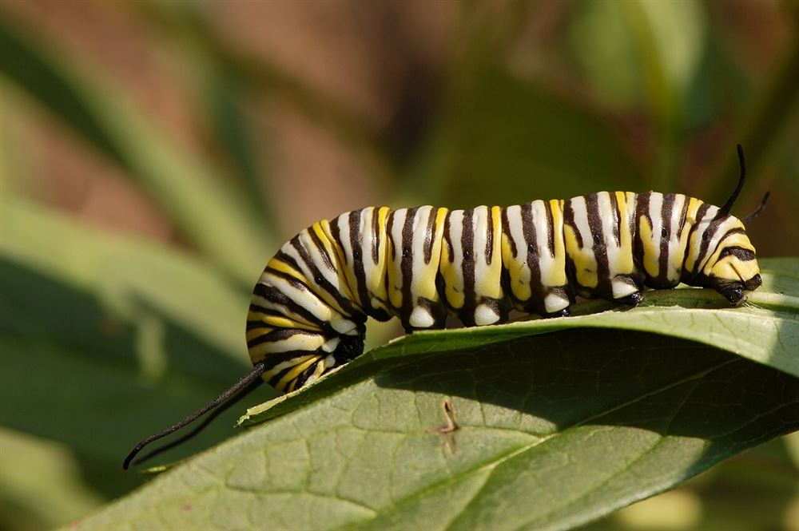

Mariposa monarca
Danaus plexippus — una de las especies migratorias más conocidas.

Fotografía: Derek Ramsey, Wikimedia Commons (GFDL 1.2). Ver créditos completos en Recursos.
Datos rápidos
- Color
- Naranja, negro y blanco
- Hábitat
- Praderas, jardines y zonas abiertas
- Planta asociada
- Asclepias (algodoncillo)
- Envergadura
- Aproximadamente 9 a 10 cm
- Observación
- Variable según la región y la época del año
Descripción
La mariposa monarca se distingue por sus alas de color naranja intenso, recorridas por venas negras y bordeadas por una franja oscura con puntos blancos. Es una de las especies más estudiadas del mundo por su comportamiento migratorio: ciertas poblaciones recorren miles de kilómetros entre zonas de reproducción y de hibernación.
Su color llamativo también cumple una función de defensa: al alimentarse de plantas del género Asclepias durante la etapa de oruga, acumula sustancias que la vuelven poco apetecible para varios depredadores.
Cómo identificarla
Patrón de alas naranja con venas negras
Presencia de plantas de algodoncillo cerca
Amplia distribución en América
Ciclo de vida asociado
Huevo sobre planta hospedera → oruga → crisálida → adulto. Ver el detalle completo en Ciclo de vida.
Relación con hábitat y conservación
La principal amenaza para la monarca es la pérdida de plantas de algodoncillo y de zonas de descanso a lo largo de su ruta migratoria. Plantar especies nativas de Asclepias y evitar pesticidas son acciones simples que ayudan a sostener su población.